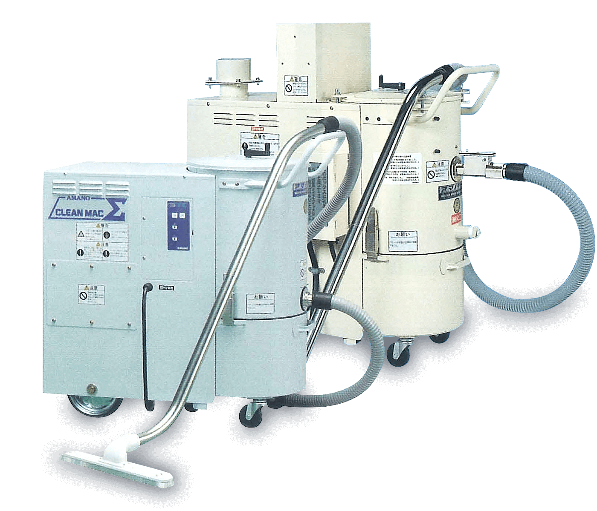

工業用強力真空掃除機
Industrial Vacuum Collector
- 廠房專用強力掃除機
日本AMANO 強力工業用掃除機 / 清潔‧回收‧品質管理

特點
- 配備大、小轉輪，移動非常輕便
- 使用粉塵袋，回收粉塵清潔又輕鬆
- 裝置高效率過濾管，排氣衛生安全
規格表
| 型號 | 電源 | 出力(Kw) | 風量(m3/min) | 靜壓(Kpa) | 靜壓(mmH2O) | 噪音(dB[A]) | 過濾管面積(m2) | 過濾管形狀 | 過濾管振落 | 收塵容量(L) | 吸入口徑(mm) | 尺寸(W*L*H) | 重量(kg) |
|---|---|---|---|---|---|---|---|---|---|---|---|---|---|
| 型號 | V-2 Σ | ||||||||||||
| 電源 | 3Ø*220V*60Hz | ||||||||||||
| 出力(Kw) | 1.5 | ||||||||||||
| 風量(m3/min) | 0/2/4.2 | ||||||||||||
| 靜壓(Kpa) | 9.81/9.32/5.39 | ||||||||||||
| 靜壓(mmH2O) | 1000/950/550 | ||||||||||||
| 噪音(dB[A]) | 69 | ||||||||||||
| 過濾管面積(m2) | 2/0.7 | ||||||||||||
| 過濾管形狀 | 成形/織布 | ||||||||||||
| 過濾管振落 | 自動.手動/手動 | ||||||||||||
| 收塵容量(L) | 27 | ||||||||||||
| 吸入口徑(mm) | Ø38.1 | ||||||||||||
| 尺寸(W*L*H) | 380*908*920 | ||||||||||||
| 重量(kg) | 95 | ||||||||||||
| 型號 | V-3 Σ | ||||||||||||
| 電源 | 3Ø*220V*60Hz | ||||||||||||
| 出力(Kw) | 2.2 | ||||||||||||
| 風量(m3/min) | 0/2.5/5.1 | ||||||||||||
| 靜壓(Kpa) | 14.7/13.2/8.04 | ||||||||||||
| 靜壓(mmH2O) | 1500/1350/820 | ||||||||||||
| 噪音(dB[A]) | 72 | ||||||||||||
| 過濾管面積(m2) | 2/0.7 | ||||||||||||
| 過濾管形狀 | 成形/織布 | ||||||||||||
| 過濾管振落 | 自動.手動/手動 | ||||||||||||
| 收塵容量(L) | 27 | ||||||||||||
| 吸入口徑(mm) | Ø38.1 | ||||||||||||
| 尺寸(W*L*H) | 380*908*920 | ||||||||||||
| 重量(kg) | 104 | ||||||||||||
| 型號 | V-3SD (防爆型) | ||||||||||||
| 電源 | 3Ø*220V*60Hz | ||||||||||||
| 出力(Kw) | 2.2 | ||||||||||||
| 風量(m3/min) | 0/2.2/4.2 | ||||||||||||
| 靜壓(Kpa) | 14.4/13.0/9.95 | ||||||||||||
| 靜壓(mmH2O) | 1465/1330/1015 | ||||||||||||
| 噪音(dB[A]) | 74 | ||||||||||||
| 過濾管面積(m2) | 2 | ||||||||||||
| 過濾管形狀 | 成形(抗靜電) | ||||||||||||
| 過濾管振落 | 手動 | ||||||||||||
| 收塵容量(L) | 27 | ||||||||||||
| 吸入口徑(mm) | Ø38.1 | ||||||||||||
| 尺寸(W*L*H) | 497*1048*913 | ||||||||||||
| 重量(kg) | 109 | ||||||||||||
| 型號 | V-5 Σ | ||||||||||||
| 電源 | 3o*220V*60Hz | ||||||||||||
| 出力(Kw) | 3.7 | ||||||||||||
| 風量(m3/min) | 0/3.3/6.0 | ||||||||||||
| 靜壓(Kpa) | 22.1/19.1/9.81 | ||||||||||||
| 靜壓(mmH2O) | 2250/1950/1000 | ||||||||||||
| 噪音(dB[A]) | 74 | ||||||||||||
| 過濾管面積(m2) | 2.6/1.2 | ||||||||||||
| 過濾管形狀 | 成形/織布 | ||||||||||||
| 過濾管振落 | 自動.手動/手動 | ||||||||||||
| 收塵容量(L) | 60 | ||||||||||||
| 吸入口徑(mm) | Ø38.1 | ||||||||||||
| 尺寸(W*L*H) | 480*1260*1020 | ||||||||||||
| 重量(kg) | 180 | ||||||||||||
| 型號 | V-7 Σ | ||||||||||||
| 電源 | 3o*220V*60Hz | ||||||||||||
| 出力(Kw) | 5.5 | ||||||||||||
| 風量(m3/min) | 0/3.3/6.4 | ||||||||||||
| 靜壓(Kpa) | 26.0/22.6/9.81 | ||||||||||||
| 靜壓(mmH2O) | 2650/2300/1000 | ||||||||||||
| 噪音(dB[A]) | 74 | ||||||||||||
| 過濾管面積(m2) | 2.6/1.2 | ||||||||||||
| 過濾管形狀 | 成形/織布 | ||||||||||||
| 過濾管振落 | 自動.手動/手動 | ||||||||||||
| 收塵容量(L) | 60 | ||||||||||||
| 吸入口徑(mm) | Ø38.1 | ||||||||||||
| 尺寸(W*L*H) | 480*1260*1020 | ||||||||||||
| 重量(kg) | 207 | ||||||||||||
| 型號 | V-7SD (防爆型) | ||||||||||||
| 電源 | 3o*220V*60Hz | ||||||||||||
| 出力(Kw) | 5.5 | ||||||||||||
| 風量(m3/min) | 0/3.3/6.2 | ||||||||||||
| 靜壓(Kpa) | 26.9/22.8/11.8 | ||||||||||||
| 靜壓(mmH2O) | 2740/2325/1200 | ||||||||||||
| 噪音(dB[A]) | 75 | ||||||||||||
| 過濾管面積(m2) | 2.6 | ||||||||||||
| 過濾管形狀 | 成形(抗靜電) | ||||||||||||
| 過濾管振落 | 手動 | ||||||||||||
| 收塵容量(L) | 60 | ||||||||||||
| 吸入口徑(mm) | Ø38.1 | ||||||||||||
| 尺寸(W*L*H) | 621*1376*1040 | ||||||||||||
| 重量(kg) | 200 |